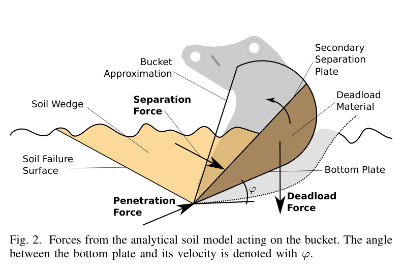
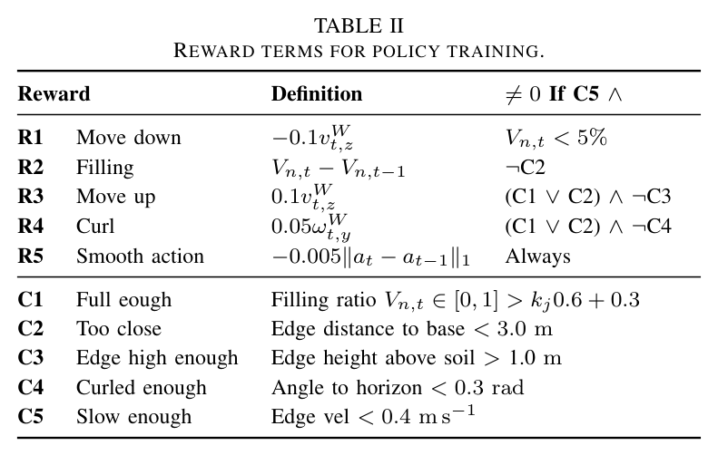
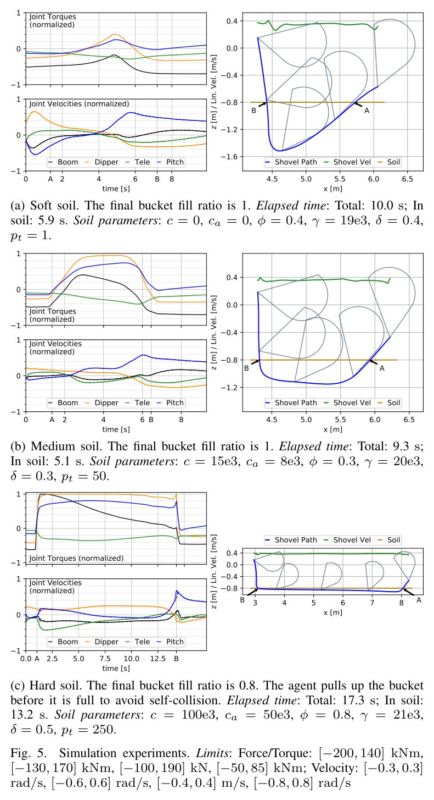
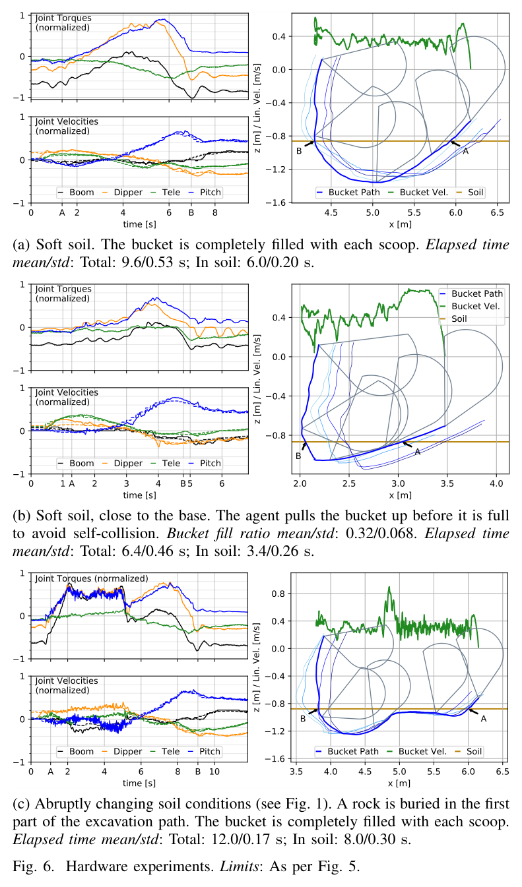
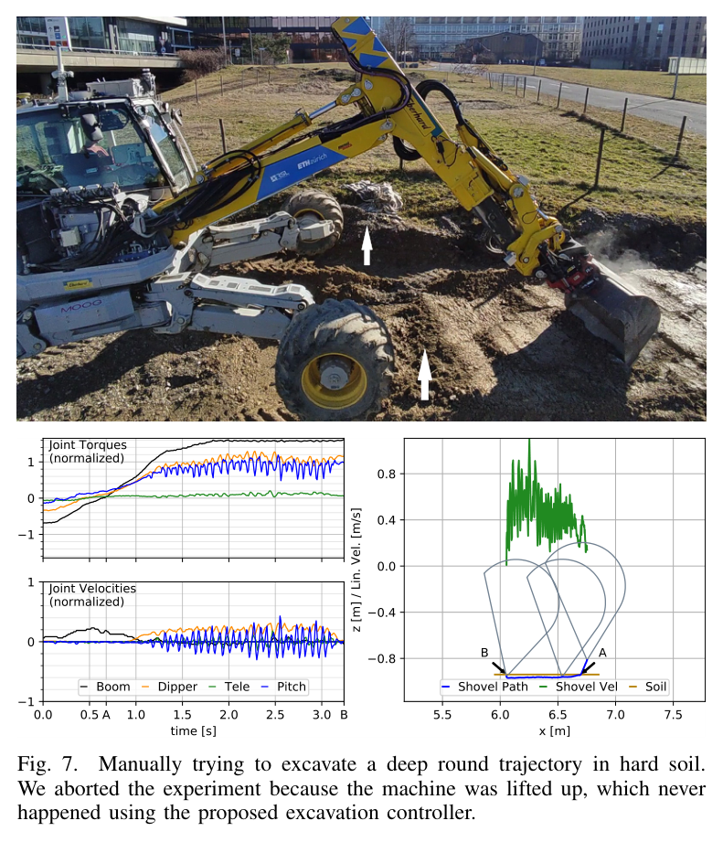

Abstract / 초록
토양 식별 없이, 저항에 맞춰 경로를 바꾸다
「Soil-Adaptive Excavation Using Reinforcement Learning」은 토양 파라미터를 입력받지 않고 굴착 중의 저항 변화에 적응하는 강화학습 제어기를 제안한다. 연구진은 FEE 기반 분리력과 관입력을 결합한 해석적 토양 모델의 파라미터 6개를 무작위화하고, RaiSim에서 PPO로 관절 속도 정책을 학습했다.
학습한 정책은 표준 비례 밸브를 사용하는 12톤 굴착기에 이식됐다. 보고된 실험에서 부드러운 흙에서는 깊게, 단단한 구간에서는 얕게 끌며 굴착했고, 정지나 기체 들림 없이 동작했다. 다만 베이스에 가까운 조건에서는 자기 충돌을 피하기 위해 채움비 32%에서 종료했다. 모든 조건에서 버킷을 가득 채웠다는 의미는 아니다.
힘의 피드백이 적응을 가능하게 한다
관절 토크 관측을 제거하자 정책은 토크 한계보다 훨씬 낮은 영역에서 작동하는 보수적 행동을 보였다.
가벼운 모델로 넓은 조건을 경험시킨다
빠른 해석 모델과 파라미터 무작위화가 다양한 토양 저항을 경험하는 학습을 뒷받침했다.
성공은 채움량과 기계 제약의 균형이다
가능한 구간에서는 채우고, 가까운 구간에서는 충돌 전에 들어 올렸다. 적응은 파는 방식뿐 아니라 끝내는 판단에도 나타났다.
01 / The Problem
좋은 굴착 궤적은 흙에 따라 달라진다
한 삽에 얼마나 담을 수 있는지는 버킷이 지나가는 경로와 토양 저항에 함께 달려 있다. 부드러운 흙에서는 깊고 짧게 파도 되지만, 단단한 흙에서는 얕고 길게 끌어야 힘의 한계를 넘지 않는다. 더 어려운 점은 같은 삽 안에서도 흙의 성질이 바뀔 수 있다는 것이다.
따라서 시작 전에 정한 경로만 정확히 따라가는 것으로는 충분하지 않다. 이 연구는 “흙이 무엇인지 먼저 알아내기”보다 “지금 느끼는 저항에 반응하기”에 무게를 둔다.
| 접근 | 이 연구가 짚는 한계 |
|---|---|
| 기구학 궤적 최적화 | 토양 반력과 힘의 한계를 무시하면 굴착 중 정지할 수 있다. |
| 동역학·토양 최적화 | 토양 파라미터가 필요하고 계산이 분 단위로 걸릴 수 있다. |
| 사람 모사·규칙 제어 | 굴착 구간과 정지 규칙을 기체·현장별로 수동 설계해야 한다. |
| 말단 힘 기반 제어 | 비교 대상으로 언급된 Jud 2019 방식은 고성능 서보밸브를 요구한다. |
| 시연 학습 | Son 2020의 비교 사례는 깊이 조절에 초점을 두고 끝점을 고정한다. |
| 입자 시뮬레이션 RL | 비교된 선행 연구에서는 계산 비용 탓에 토양 다양성과 실차 검증이 제한됐다. |
토양의 이름을 맞히는 대신,
버킷에 걸리는 힘에 반응하게 한다.
02 / Simulation Design
정밀한 흙 하나보다, 다양한 저항을 경험하기
학습 환경은 RaiSim 강체 동역학과 해석적 토양 힘 모델을 결합한다. 토양 힘 계산은 강체 동역학 계산보다 약 40배 빠르다고 보고됐다. 이 수치는 전체 학습이 40배 빨라졌다는 뜻은 아니다. 빠른 토양 계산은 많은 조건을 반복 경험시키는 데 유리한 설계 선택이다.
기계 모델: 유압의 비대칭을 토크 한계에 담다
굴착기는 호스와 기름을 제외한 CAD 기반 강체 모델이다. 정책이 내놓은 관절 속도 명령을 PID가 토크로 바꾸고, 실차의 한계로 제한한다. 특히 명령과 반대 방향의 힘을 더 크게 견디는 유압 특성을 반영해 속도 방향에 따라 토크 한계를 다르게 설정했다.
베이스는 움직일 수 있게 두고, 바퀴와 지면 사이 마찰계수는 0.8로 설정했다. 다리와 선회는 고정했다. 이 구성은 팔의 굴착 동작뿐 아니라 기체가 끌리거나 들리는 현상도 학습에 반영하기 위한 것이다.

토양 모델: 분리력 + 관입력 + 적재 자중
- 분리력. Reece의 FEE(Fundamental Earthmoving Equation)를 3차원으로 확장한 Park 2002 모델을 사용한다. 버킷을 삼각형과 반원으로 근사하고, 채워질 때 생기는 2차 분리판과 적재 흙의 무게를 반영한다.
- 관입력. 바닥판 마찰은 토압 기반 모델로, 날의 저항은 공동 확장 이론의 한계 압력을 계수 pt로 단순화해 계산한다. 날 저항은 바닥판과 이동 방향 사이 각도 φ의 cos 값으로 조정한다.
| 파라미터 | 단위 | 범위 |
|---|---|---|
| 점착력 c | kPa | 0–105 |
| 부착력 ca | kPa | 0–c |
| 내부 마찰각 Φ | rad | 0.3–0.8 |
| 단위중량 γ | kN/m³ | 17–22 |
| 흙–버킷 마찰각 δ | rad | 0.2–0.4 |
| 공동 압력 계수 pt | 무차원 | 0–300 |
해석의 경계 넓은 무작위화는 모델 오차에 대응하는 전략이다. 그러나 특정 범위를 경험했다는 사실이 모든 실제 토양이나 장애물에 대한 적응을 보장하지는 않는다.
03 / Learning to React
압력은 감각이 되고, 속도는 행동이 된다
정책에는 점착력이나 마찰각 같은 토양 파라미터를 주지 않는다. 대신 관절 토크와 기구학 정보를 중심으로 총 27개 관측값을 제공한다. 따라서 이 방법을 “토크만 보는 제어기”라고 설명하면 부정확하다. 토크는 흙의 저항에 대응하는 데 중요한 피드백이지만, 자세·속도·흙 높이·채움비도 함께 사용한다.
실차의 피드백 흐름
자세·속도·추정 상태
현재 상태에 반응
유압 구동
굴착 후 달라진 힘과 자세가 다시 관측으로 돌아온다. 학습은 시뮬레이션에서, 적응 행동은 실행 중에 이루어진다.
| 관측 | 차원 | 담고 있는 정보 |
|---|---|---|
| 관절 토크 | 4 | 관절에 걸리는 부하 |
| 관절 위치·속도 | 8 | 팔의 구성과 움직임 |
| 이전 명령 | 4 | 직전의 제어 행동 |
| 흙 높이·채움비 | 2 | 지면과 적재 상태 |
| 버킷 자세·속도 | 6 | 캐빈 기준 버킷 상태 |
| 캐빈 피치·피치율 | 2 | 기체 기울기와 변화 |
| 각도 φ | 1 | 바닥판과 이동 방향의 관계 |
행동은 4개 관절의 속도다. 토크를 직접 명령하는 정책은 모델 부정확성과 밸브 데드밴드 때문에 배제했다. 토크 관측을 제거한 비교에서는 정책이 정지를 피하려고 가용 토크를 충분히 쓰지 않는 보수적 굴착을 보였다. 이는 토크 피드백의 중요성을 보여 주지만, 관측을 빼면 모든 굴착이 불가능해진다는 뜻은 아니다.
성공 조건은 “많이 담기” 하나가 아니다
성공 종료는 충분히 채웠거나 베이스에 가까워진 상태에서, 버킷을 충분히 높이고 감되 과도하게 감지 않았을 때 성립한다. 커리큘럼은 학습이 진행될수록 채움비와 들어 올리는 높이의 요구를 높인다.
kj = 1 − e−0.01j
| 조건 | 판정 기준 |
|---|---|
| T1 · 충분히 참 | 채움비 > kj × 0.68 + 0.3 · 보상 +10 |
| T2 · 베이스에 가까움 | 날–베이스 거리 < 3.0 m · 보상 +5 |
| T3 · 충분히 높음 | 날 높이 > kj × 0.7 + 0.3 m |
| T4 · 충분히 감음 | 수평 대비 각도 < 0.3 rad |
| T5 · 과다 감기 방지 | 버킷 원점이 날보다 높음 |
부정 종료에는 −1의 보상을 둔다. 버킷 속도 0.5 m/s 초과, 바닥판으로 흙 밀기(φ < 0), 베이스 속도 0.1 m/s 초과, 빈 버킷이 0.5 m 위에 있는 상태, 자기 충돌, 너무 깊거나 평평한 상태 등이 해당한다.

학습 설정
PPO와 GAE를 사용했고 구현은 rsl_rl에 기반한다. 정책·가치 신경망은 128×128 은닉층과 LeakyReLU를 사용한다. 할인율은 0.99, 시간 간격은 0.15초, 에피소드는 19.95초, 배치는 약 6.81만 샘플이다. 약 3,000회 갱신, 총 2억 샘플 규모의 학습에 약 7시간이 걸렸다.
초기 상태도 다양화했다. 토양, 흙 높이(−2.0∼−0.5 m), 팔 자세를 무작위화하고, 25%는 버킷이 이미 흙 속에 있고 채움비가 임의인 상태에서 시작한다. 피치는 ±0.1 rad 범위로 바꾼다.
04 / Evidence
저항이 커지자, 더 얕고 길게 팠다
시뮬레이션에서 정책은 토양에 따라 다른 경로를 선택했다. 부드러운 흙에서는 깊게 들어가 감았고, 중간 흙에서는 깊이를 줄인 채 끌었다. 단단한 흙에서는 얕게 전 작업 범위를 사용한 뒤, 자기 충돌 전에 들어 올렸다.

명령 속도가 매끄럽게 바뀐다는 점도 실차 이식에 중요하다. 실제 M545에서는 표준 비례 밸브와 파일럿 전기 밸브, PID와 피드포워드 속도 제어를 사용했다. 압력으로 관절 토크를 구하고, IMU로 관절각을 얻었다.

부드러운∼중간 흙
보고된 반복 실험에서 매번 버킷을 가득 채웠다.
베이스 가까이
자기 충돌 회피를 위해 가득 차기 전에 들어 올렸다.
매설 화강암
바위 위를 끌고 끝에서 다시 깊게 파 가득 채웠다.
화강암 조건에서 정책은 붐으로 아래로 힘을 가하며 바위 위를 끌었다. 바위 끝을 지나자 다시 깊게 파고들었다. 이는 한 번 정한 깊이를 유지하는 동작보다, 굴착 도중 달라지는 저항에 반응하는 행동에 가깝다.

결과를 읽는 방법 이 비교는 토양에 맞지 않는 경로의 위험을 보여 준다. 숙련 작업자나 모든 기존 제어기보다 우수하다는 일반적 성능 비교는 아니다. 시간의 ± 값은 제공된 노트의 표기를 유지했으며, 반복 횟수와 통계량 정의는 원문 확인이 필요하다.
05 / Boundaries
실차 적응은 확인됐지만, 현장 전체를 푼 것은 아니다
이 연구의 강점은 시뮬레이션 정책을 실제 유압 굴착기에 옮겨 적응 행동을 확인했다는 데 있다. 다만 지형 인식, 기체 전 자세의 안정성, 작업 전체의 생산성까지 검증한 시스템으로 읽어서는 안 된다.
| 남은 제약 | 의미 |
|---|---|
| 수평 지면 가정 | 모델은 경사를 표현할 수 있지만, 사용한 지면 가정은 단순하다. 흙 높이는 바퀴 높이 평균으로 추정한다. |
| 채움비 근사 | 경로 적분으로 추정하므로 버킷 내부의 실제 적재량을 직접 측정한 값과 구분해야 한다. |
| 일정한 토크 한계 | 실린더 기구에 따라 달라지는 자세별 가용 토크를 상수 한계로 단순화했다. |
| 선회 위치 고정 | 선회 방향에 따른 안정성 변화는 무작위화하지 않았다. |
| 유압 지연·데드존 | 실차 버킷 속도는 0.4 m/s를 약간 넘기도 했다. 학습 보상의 기준이 실차의 엄격한 속도 상한은 아니다. |
| 속도 최적화 미수행 | 보고된 동작 시간만으로 작업 생산성이 최적이라고 결론 낼 수 없다. |
향후 방향은 지각 센서를 통한 지형 인식, 매설 장애물에 대한 명시적 학습, 그리고 궤적 추종 제어기와의 결합이다. 한 삽의 적응 굴착을 건물 기초 전체 굴착 같은 연속 작업으로 확장하는 단계가 남아 있다.
06 / Implications · 독자 관점
HR35에 가져올 것은 수치보다 검증 질문이다
다음은 논문의 검증 결과와 구분되는 HR35 적용 관점의 해석이다. 토양 파라미터를 식별하는 접근과 달리, 이 연구는 접촉 중의 반응을 학습한다. AGX 토양을 사용하는 디지털 트윈에서도 실차 제어기 후보로 검토할 가치가 있다.
- 압력 보정의 우선순위. 토크 관측의 효과는 압력 count→bar 보정과 압력→관절 토크 변환 검증의 중요성을 뒷받침한다. 센서 신호를 쓸 수 있다는 것과 신뢰할 수 있다는 것은 별개의 문제다.
- 토양 범위의 의미 확인. 표 I의 범위는 AGX 무작위화 설계의 출발점으로 사용할 수 있다. 다만 모델별 파라미터 정의와 단위를 대조한 뒤 적용해야 하며, 숫자를 그대로 옮길 근거는 충분하지 않다.
- 방향별 유압 한계 검증. 명령 반대 방향의 부하를 더 크게 견디는 특성이 HR35에서도 나타나는지 확인한다. 릴리프·체크밸브 거동과 자세별 토크 한계를 함께 살펴볼 필요가 있다.
- 기체 안정성부터 시험. 3.5톤급 HR35의 들림 여유는 질량만으로 판단할 수 없다. 무게중심, 지지 영역과 작업 자세를 반영해 검증하고, 베이스 속도 0.1 m/s 같은 종료 기준도 기체에 맞게 평가한다.
원 노트는 Zhao 2020의 토양 식별 접근·실측 토양 5종 및 Nan 2024의 압력 없는 접근과 대조할 것을 제안한다. 해당 연구들의 상세 비교는 이 글의 검증 범위에 포함하지 않는다.
Takeaway
모르는 흙에서도,
반응을 배울 수 있다
이 연구의 성과는 모든 흙의 성질을 알아낸 데 있지 않다. 다양한 저항을 경험한 정책이 토크와 자세를 읽고, 실제 굴착 중에 파는 방식을 바꿀 수 있음을 보인 데 있다.
다음 적용에서 물어야 할 질문도 분명하다. 힘을 얼마나 믿을 수 있게 관측하는가. 기계의 한계를 얼마나 잘 모델링했는가. 그리고 언제 덜 담고 끝내야 하는가.
07 / Source Notes
출처와 읽기 안내
IEEE Robotics and Automation Letters, 7(4), 2022.
ETH Zürich Robotic Systems Lab.
출판 논문 · DOI 10.1109/LRA.2022.3189834
노트에서 읽은 판 · ETH Research Collection
- 작성 범위. 이 글은 제공된 Obsidian 논문 요약을 공개 기사 형식으로 재구성했다. 별도의 원문 대조나 독립 재현을 수행한 보고서는 아니다.
- 그림과 표. 그림 1·2·5·6·7과 표 II는 제공된 원 논문 이미지 자산을 사용했다. 캡션은 노트의 설명을 바탕으로 편집했다. 텍스트 표와 제어 흐름도는 해설용 재구성이다.
- 수치의 범위. 학습 시간, 동작 시간, 채움비 및 “정지·들림 없음”은 보고된 설정과 실험 조건에 해당한다. 보편적인 성능 보장으로 확장하지 않는다.
- 결과와 해석. HR35 검토 항목과 마지막 시사점은 적용을 위한 해석이다. 원 노트에 짧게 언급된 선행 연구는 서지 정보가 충분하지 않아 독립 참고문헌으로 확장하지 않았다.